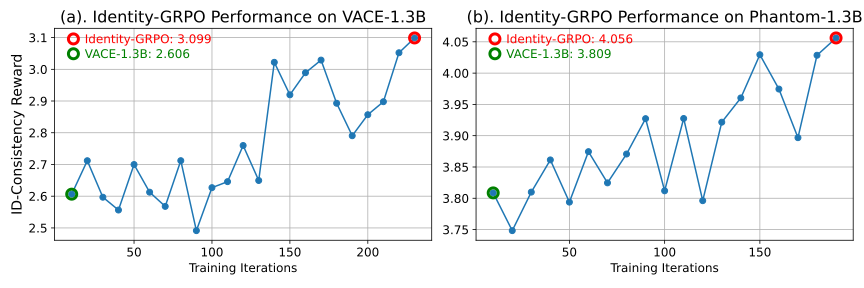

Abstract
While advanced methods like VACE and Phantom have advanced video generation for specific subjects in diverse scenarios, they struggle with multi-human identity preservation in dynamic interactions, where consistent identities across multiple characters are critical. To address this, we propose Identity-GRPO, a human feedback-driven optimization pipeline for refining multi-human identity-preserving video generation. First, we construct a video reward model trained on a large-scale preference dataset containing human-annotated and synthetic distortion data, with pairwise annotations focused on maintaining human consistency throughout the video. We then employ a GRPO variant tailored for multi-human consistency, which greatly enhances both VACE and Phantom. Through extensive ablation studies, we evaluate the impact of annotation quality and design choices on policy optimization. Experiments show that Identity-GRPO achieves up to 18.9% improvement in human consistency metrics over baseline methods, offering actionable insights for aligning reinforcement learning with personalized video generation.
Comparison
The first two groups show a comparison between VACE-1.3B and VACE-1.3B+Identity-GRPO, while the last two groups compare Phantom-1.3B with Phantom-1.3B+Identity-GRPO. In each group, the first video presents the results from the baseline model, and the second video shows the results generated by Identity-GRPO. In these cases, the baseline model produced outputs that clearly mismatched the reference image, whereas Identity-GRPO consistently maintained high identity alignment.
Experiments
Figure (a) and (b) respectively show the performance curves of Identity-GRPO on VACE-1.3B and Phantom-1.3B. Both models exhibited a clear upward trend during the GRPO training process.
BibTeX
@misc{meng2025identitygrpooptimizingmultihumanidentitypreserving,
title={Identity-GRPO: Optimizing Multi-Human Identity-preserving Video Generation via Reinforcement Learning},
author={Xiangyu Meng and Zixian Zhang and Zhenghao Zhang and Junchao Liao and Long Qin and Weizhi Wang},
year={2025},
eprint={2510.14256},
archivePrefix={arXiv},
primaryClass={cs.CV},
url={https://arxiv.org/abs/2510.14256},
}